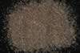

|
|
(For further information on spectroscopy, see:
http://speclab.cr.usgs.gov)
TITLE: Sphene, Titanite HS189 DESCRIPT
DOCUMENTATION_FORMAT: MINERAL
SAMPLE_ID: HS189
MINERAL_TYPE: Nesosilicate
MINERAL: Titanite (Sphene)
FORMULA: CaTiSiO5
FORMULA_HTML: CaTiO(SiO4)
COLLECTION_LOCALITY: Ontario, Canada
ORIGINAL_DONOR: Hunt and Salisbury Collection
CURRENT_SAMPLE_LOCATION: USGS Denver Spectroscopy Laboratory
ULTIMATE_SAMPLE_LOCATION: USGS Denver Spectroscopy Laboratory
SAMPLE_DESCRIPTION:
"N-16 Sphene 189B--Ontario. CaTiO(SiO4): Sphene is a widespread accessory mineral in igneous and metamorphic rocks. Calcium may be replaced partially by strontium and barium, or by the rare earths and thorium, the higher valencies of the latter being balanced by the entry of trivalent iron and aluminum into the titanium position. The titanium may be partially replaced by Sn, Nb and Ta, with possible compensation of Na replacing Ca. Finally, one O may be replaced by OH or F. This particular sample is a dark reddish brown, apparently due primarily to both the ferric iron and titanium, as described for rutile (see Part III, p. 204, spectrum 0-15A). The presence of about 5 percent opaque magnetite lowers the overall reflectivity of this sample."
Sieve interval 74 - 250µm.
Hunt, G.R., J.W. Salisbury, and C.J. Lenhoff, 1973, Visible and near-infrared spectra of minerals and rocks: VI. Additional silicates. Modern Geology, v. 4, p. 85-106.
IMAGE_OF_SAMPLE:

END_SAMPLE_DESCRIPTION.
XRD_ANALYSIS:
40 kV - 30 mA, 6.5-9.5 keV
File: sphen189.out, -.mdi
References: Borg and Smith (1969); JCPDS #25-117; WAR-0612; Huebner's
reference pattern
Found: Titanite, minor quartz, albite, unidentified weak reflections
at 7.1, 3.03, 2.90, and 2.71 Angstroms
Comment: Titanoite is the preferred name for sphene. The albite is
very sodic, but the pattern is not sufficiently strong for
determination of the structural state by the method of Wright (1968)
J.S.Huebner, J.Pickrell, T. Schaefer,written communication (USGS)
END_XRD_ANALYSIS.
COMPOSITIONAL_ANALYSIS_TYPE: None # XRF, EM(WDS), ICP(Trace), WChem
COMPOSITION_TRACE:
COMPOSITION_DISCUSSION:
END_COMPOSITION_DISCUSSION.
MICROSCOPIC_EXAMINATION:
END_MICROSCOPIC_EXAMINATION.
SPECTROSCOPIC_DISCUSSION:
END_SPECTROSCOPIC_DISCUSSION.
SPECTRAL_PURITY: 1b2c3c4_ # 1= 0.2-3, 2= 1.5-6, 3= 6-25, 4= 20-150 microns
| LIB_SPECTRA_HED: | where | Wave Range | Av_Rs_Pwr | Comment |
|---|---|---|---|---|
| LIB_SPECTRA: | splib04a r 4593 | 0.2-3.0µm | 200 | g.s.= |
| LIB_SPECTRA: | splib05a r 6378 | 0.2-3.0µm | 200 | g.s.= |
| LIB_SPECTRA: | splib06a r 21059 | g.s.= | ||
| LIB_SPECTRA: | splib06a r 21071 | g.s.= |
{kind=link}